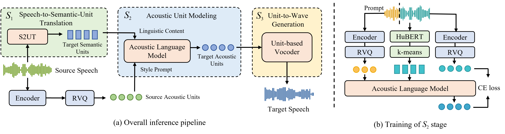

Abstract. Direct speech-to-speech translation (S2ST) with discrete self-supervised representations has achieved remarkable accuracy, but is unable to preserve the speaker timbre of the source speech. Meanwhile, the scarcity of high-quality speaker-parallel data poses a challenge for learning style transfer during translation. We design an S2ST pipeline with style-transfer capability on the basis of discrete self-supervised speech representations and codec units. The acoustic language model we introduce for style transfer leverages self-supervised in-context learning, acquiring style transfer ability without relying on any speaker-parallel data, thereby overcoming data scarcity. By using extensive training data, our model achieves zero-shot cross-lingual style transfer on previously unseen source languages. Experiments show that our model generates translated speeches with high fidelity and speaker similarity. Audio samples are available at http://stylelm.github.io/ .

Our method comprises three consecutive stages, utilizing two distinct types of discrete units: 1) speech-to-semantic-unit translation stage S1, which converts source audio into semantic units of the translated speech; 2) acoustic unit modeling stage S2, generating target acoustic units conditioned on the semantic output from the preceding stage and the acoustic units of the source speech as style prompt; 3) unit-to-wave generation stage S3, producing translated speech that maintains consistent style with the source.
The training procedure of S2 adopts a self-supervised training paradigm, where the first three seconds of each audio sample is truncated as prompt, and the acoustic language model is trained to predict the acoustic units of the remaining part conditioned on its semantic units and the prompt acoustic units with cross-entropy loss. This in-context learning approach enables the model to grasp the correspondence in acoustic characteristics between the two parts and acquire style transfer ability. During inference, we use semantic tokens from the previous stage and acoustic units of source speech as the style prompt to realize cross-lingual style transfer.
In this section, we provide results on Es-En translation. (You may need to scroll right to see full results.)
| Source | CVSS-T target | S2UT | Ours | S2UT + PPG-VC | S2UT + NANSY | S2UT + YourTTS | |
|---|---|---|---|---|---|---|---|
| Audio | |||||||
| Ref Text | Dependiendo del tipo de material se conserva en la Biblioteca o el Archivo. | depending on the type of material it is kept in the library or in the archive | |||||
| Asr Result | depending on the type of material it is preserved in the library or the archive | depending on the type of material it is preserved in the library or the archive | depending on the type of material it is preserved in the library or the archive | depending on the type of material it is preserved in the library or the archive | depending on the type of material it is preserved in the library or the archive | ||
| Audio | |||||||
| Ref Text | Los ocho números de la revista fueron publicados por Fantasy Publishing Company, Inc. | the eight volumes of the magazine were published by fantasy publishing company inc | |||||
| Asr Result | the eight numbers of the magazines were published by fentasy publishing company incorporated | the eight numbers of the magazines were published by fantasy publishing company incorporated | the eight numbers of the magazines were published by fantasy publishing company incorporated | the eight numbers of the magazines were published by fantasy publishing company incorporated | the eight numbers of the magazines were published by fantasy publishing company incorporated | ||
| Audio | |||||||
| Ref Text | Cantacuceno casó a su hija Helena con el joven emperador para sellar el acuerdo. | kantakouzenos married his daughter helena with the young emperor in order to seal the deal | |||||
| Asr Result | canta cosena marry his daughter helena with the young emperor to save the agreement | cante poseno marrid his daughter helena with the young emperor to save the agreement | canto caina marry his daughter elena with the young emperor to save the agreement | cantacosena married his daughter helena with the young emperor to save the agreement | cantacusena married his daughter helena with the young emperor to say the agreement | ||
| Audio | |||||||
| Ref Text | Lideró una rebelión contra Pierre Nord Alexis y lo sucedió como presidente. | he led a rebellion against pierre nord alexis and succeeded him as president | |||||
| Asr Result | he lead a rebellion against pierre nod alexis and succeeded as president | he lead a rebellion against biernad alexis and succeeded as president | he laid a rebellion against pierre nod alexis and succeeded as president | he laid a rebellion against pierr nod alexis and succeeded as president | he laid a rebellion against piernod alexis and succeeded as president |
In this section, we provide results on Fr-En translation. (You may need to scroll right to see full results.)
| Source | CVSS-T target | S2UT | Ours | S2UT + PPG-VC | S2UT + NANSY | S2UT + YourTTS | |
|---|---|---|---|---|---|---|---|
| Audio | |||||||
| Ref Text | Il est situé au sud-est de l'île, à quelques kilomètres de Joao Barrosa. | it is located on the southeast part of the island several kilometers from joao barrosa | |||||
| Asr Result | it is located in the southeast of the island wich a few kilometers of gelboros | it is located in the south east of the island with a few kilometers of jal borrows | it is located in the southeast of the island which a few kilometers of gelbros | it is located in the southeast of the island with a few kilometers of gelborougs | it is located in the southeast of the island with a few kilometers of jobros | ||
| Audio | |||||||
| Ref Text | Chladni est le fondateur de l'acoustique moderne. | chladni is the founder of modern acoustics | |||||
| Asr Result | cadne is the founder of modern acoustics | cadney is the founder of modern acoustics | cadne is the founder of modern equistics | cadme is the founder of modern acoustics | cadne is the founder of modern acoustics | ||
| Audio | |||||||
| Ref Text | Depuis sa sortie, les expériences avec cet album sont très positives pour le groupe. | since its release the experiences with this album has been very positive for the band | |||||
| Asr Result | since its release the experiences with this album are very positive for the band | since this release the experiences with this album are very positive for the band | since its release the experiences with this elblem are very positive for the band | since its release the experiences with this album are very positive for the band | since its release the experiences with this album are very causative for the band | ||
| Audio | |||||||
| Ref Text | Il s’agit donc d’une séquence continue de diminution du déficit nominal. | it is therefore a continuous sequence of decreasing the nominal deficit | |||||
| Asr Result | this is a continuous sequence of decrease with a nominal deficit | this is a continuous sequence of decreased with the nominal deficit | this is a continuous sequence of decrease with the nominal deficit | this is a continuous sequence of decreased with the nominal deficit | this is a continuous sequence of decrease to the nominal deficit |